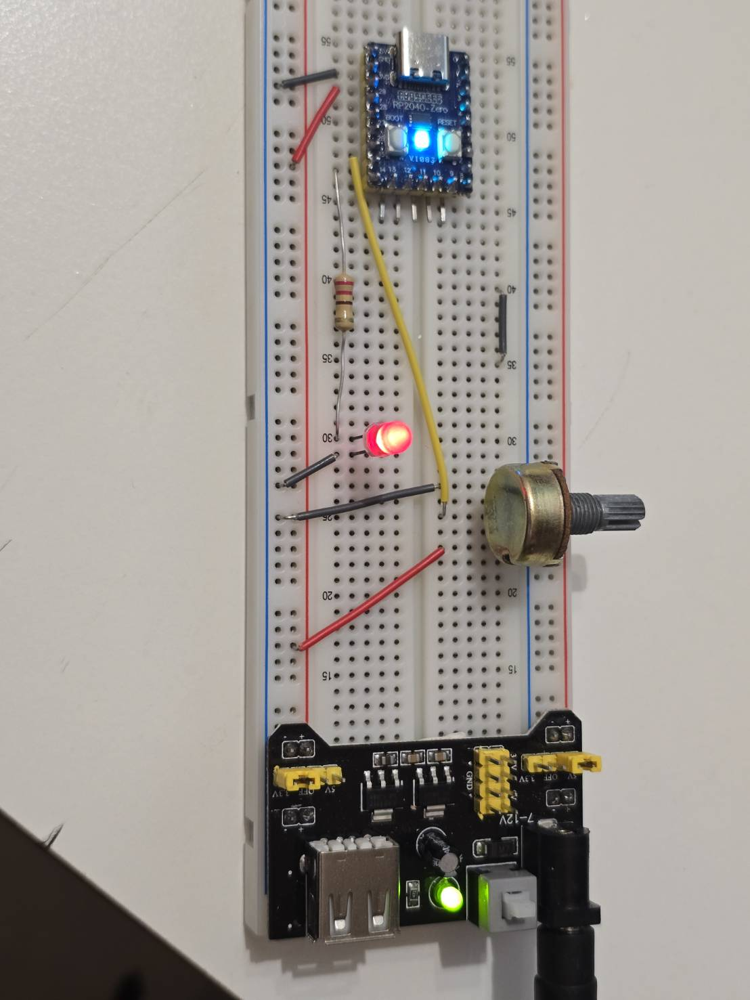
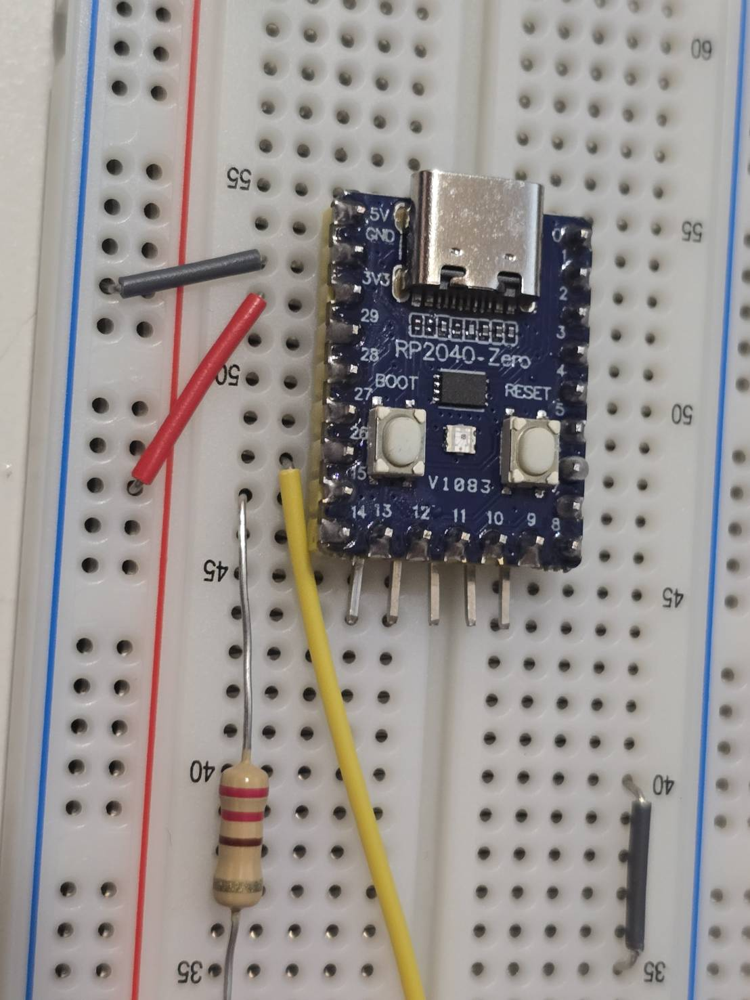

Raspberry Pi Pico + WL 10K 可變電阻 + LED 接線圖
接線表
| Raspberry Pi Pico 腳位 |
連接元件 |
用途 |
| 3V3 |
WL 10K 可變電阻其中一端 |
提供 ADC 參考電壓上限 |
| GND |
WL 10K 可變電阻另一端 |
提供 ADC 參考電壓下限 |
| GP26 / ADC0 |
WL 10K 可變電阻中間腳 |
讀取旋鈕電壓變化 |
| GP15 |
220Ω ~ 330Ω 電阻 → LED 正極 |
控制 LED 亮滅或 PWM 亮度 |
| GND |
LED 負極 |
LED 回路接地 |
實體接法照片

圖一：整體接線。上方是 RP2040-Zero 主板，中間是外接 LED 與限流電阻，右側是 WL 10K 可變電阻，下方是麵包板電源模組。

圖二：主板近照。板上中央小方形 LED 是 WS2812 RGB LED，程式以 GPIO16 控制閃爍；外接 LED 亮度則由 GP15 的 PWM 控制。
實體接線重點
- WL 10K 可變電阻中腳接 GP26 / ADC0，用來讀取旋鈕位置。
- WL 10K 可變電阻兩側分別接 3V3 與 GND；如果旋轉方向和預期相反，交換兩側即可。
- 外接 LED 正極必須經過 220Ω ~ 330Ω 限流電阻後接到 GP15。
- 外接 LED 負極接 GND。
- RP2040-Zero 板載 WS2812 RGB LED 已接在 GPIO16，不需要額外接線。
補充說明
- 可變電阻建議使用 10KΩ，適合接 ADC 讀取。
- Pico 的 ADC 最大輸入電壓是 3.3V，不可接 5V 到 ADC 腳位。
- LED 必須串聯 220Ω ~ 330Ω 限流電阻。
- GP26 是 Pico 的 ADC0，適合讀取旋鈕位置。
- GP15 可改成其他 GPIO，例如 GP16、GP17，但程式碼也要同步修改。